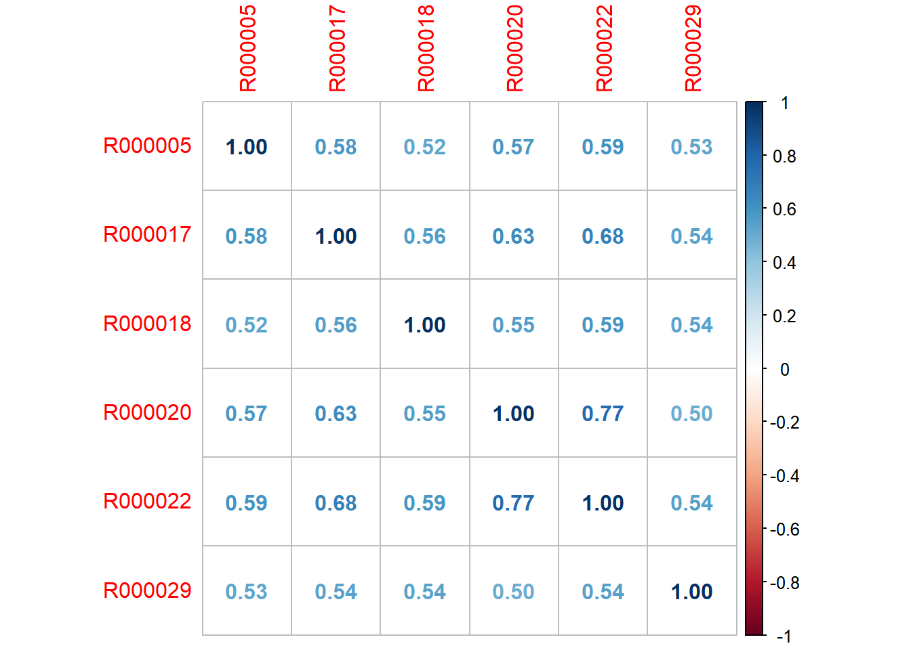

“Multiple regression is perhaps the most frequently used statistical tool for the analysis of data in the organizational sciences. The information provided by such analyses is particularly useful for addressing issues related to prediction such as identifying a set of predictors that will maximize the amount of variance explained in the criterion. However, most researchers and practitioners are simultaneously interested in multiple regression for theory testing or explanation purposes. Here, the question of interest becomes understanding the extent to which each variable drives the prediction. Essentially, one wishes to understand the contribution each predictor makes towards explaining variance in the criterion. Past research has documented how indices commonly produced by multiple regression analyses fail to appropriately partition variance to the various predictors when they are correlated (Darlington 1968). In response, two alternative approaches, dominance analysis (Budescu 1993) and relative weight analysis (Fabbris 1980; Johnson 2000), have been developed that allow for more accurate variance partitioning among correlated predictors.”
From “Relative Importance Analysis: A Useful Supplement to Regression Analysis” – found here
Relative weights analysis uses the correlations between the dependent and independent variables and determines what percentage of the explained variance can be attributed back to each independent variable. The benefit to relative weights is that these percentages are additive, meaning that you can sum up the percentages to create groups with similar themes. For instance, questions about the helpfulness, friendliness, and knowledge of associates can be grouped to create an associates factor.
2.1.1 Advantages of Relative Weights:
Relative weights are specifically developed for use with correlated predictors
Considers the predictive value of the variable both in isolation and in the presence of other variables
The non-scaled weights sum to the R-squared and thus can be used as estimates of relative effect sizes
Relative weights are easily rescaled into proportions or percentages which is easily communicated to clients
2.1.2 How we use Relative Weights at SMG with our Key Driver analysis
Key Driver Analyses are the key deliverable and the bread-and-butter of the Research Department. With key driver analysis, we are concerned with evaluating the relative importance of different aspects of the customer’s product and service experience in predicting their Overall Satisfaction.
The Relative Weights analysis works very well with the types of variables we utilize in our analyses at SMG, as they are usually very highly correlated. When we run a linear regression, it typically results in one variable taking the lion’s share of variance as the top driver, while the rest fall in at a much smaller variance due to the nature of linear regressions. Using Relative Weights allows us to assign that shared variance back to the original variables, which results in a much more balanced predictive model. In addition, it’s easier for clients to understand as the rescaled importance weights sum to 100%.
Our Key Driver models are filtered down to only 4’s & 5’s (or satisfied and highly satisfied) for Overall Satisfaction. We do this to hone in on what is most important to driving loyalty. When we look at our loyalty curve crosstabs (% Highly Likely to Return or Recommend broken out by Overall Satisfaction rating), we see that moving a 4 (Satisfied) on OSAT to a 5 (Highly Satisfied) on OSAT results in a two to three times greater % Highly Likely to Return or Recommend. In addition, normally about two thirds of guests fall into these two buckets, so it’s very representative of the survey guest base. If a client is interested in a full-scale approach, consider running Rewards & Penalties, covered later in this section as well as in section 8 of the training manual “SMart Gen II”, Analyses: Key Driver (Relative Weights).
2.2 Running the Key Driver Analysis
2.2.1 Materials & Applications to run Key Drivers
The Key Driver analysis has been automated to run in SMart, see section 8, Analyses: Key Driver (Relative Weights) Analysis for further information. However, we still occasionally run Key Drivers manually in R via the SMG package using the key_driver() function.
2.2.2 Pull the data
For this example we are going to use data from United Dairy Farms. To pull the data directly from SQL we use the following syntax:
Show the code
library(tidyverse)library(odbc)library(corrplot)library(papeR)library(gt)library(broom)connection <-dbConnect(odbc(),Driver ="SQL Server",Server ="SRV_INT_TRANS\\SMGTRANS",Trusted_Connection ="True")udf_csi_kd <-dbGetQuery(connection,"SELECT UDF_CSI_Calls.[UID], UDF_CSI_Calls.[R000005], UDF_CSI_Calls.[R000017], UDF_CSI_Calls.[R000018], UDF_CSI_Calls.[R000020], UDF_CSI_Calls.[R000022], UDF_CSI_Calls.[R000029]FROM edify.dbo.UDF_CSI_Calls WITH (NOLOCK) INNER JOIN structures.dbo.UDF_CSI_Store_Info WITH (NOLOCK) ON UDF_CSI_Calls.[StoreId] = UDF_CSI_Store_Info.[StoreId] WHERE UDF_CSI_Store_Info.[IN_CSI] = -1 AND UDF_CSI_Store_Info.[TEST_STORE] = 0AND UDF_CSI_Calls.[Date_Time] BETWEEN '2022-01-01 12:00:00 AM' AND '2022-12-31 11:59:59 PM'AND UDF_CSI_Calls.[TERM] IN ('OK', 'WebOK')")
In this case we only pull the variables that we need for the analysis.
2.2.3 Prepare data
In order to get the data into the right format, it is important to perform the following steps:
Select only the variables that we are going to use including OSAT and the explanatory variables (make sure OSAT is the first variable in the dataset)
Keep only complete cases
Filter OSAT so it only includes 4s and 5s
-Convert 4s into 0s and 5s into 1s
All those steps can be performed in a single run of code using the tidyverse like this:
The key drivers function is built so it only needs two main inputs, the dataset itself and the name of the project. Once all the previous steps have been performed, you can easily run the model with these lines of code
The rescaled percentages in the output can be interpreted as the relative importance in moving 4’s to 5’s on OSAT for each of the measures, with the benefit of being able to sum the percentages into categories. The 3 categories are Service, Product, Environment. See the “Building a Key Driver Model” portion of this section for more info on the categories as well as what constitutes a good Key Driver model.
2.3.2 Reading the Output - Correlations
If you ran the dropdown version of the syntax, as seen below, there is no formatting to your correlation table and it isn’t filtered to OSAT 4’s and 5’s. The Syntax version has formatting to match the SMart correlation table as well as the filter. Both work, the correlation table is to keep an eye on multicollinearity. Try to keep the correlations above .300 and below .800.
If you want to visualize the correlations in a more redable way, we recommend using corrplot like this:
Show the code
udf_csi_kd%>%cor()%>%corrplot("number")

2.3.3 Reading the Output - Descriptives
The Descriptives command gives you a quick high-level look at the R variables included in the analysis, you can check this to see if any of them have extremely low sample. We strive to keep 80% of the response base to keep the model representative.
2.3.4 Reading the Output – Relative Weights & R
Extracting the results from the object we just created is fairly easy, you can simply enter the name of the object into the console (udf_kd_model in this case).
Show the code
udf_kd_model
[[1]]
Variable Names Variable Labels Raw Weights (epsilon)
1 R000017 Speed 0.11317217
2 R000029 Availability of Products 0.10341414
3 R000022 Attentiveness of Associate 0.10187778
4 R000020 Friendliness of Associate 0.09723517
5 R000018 Exterior Cleanliness 0.09191880
Rescaled Weights p Value
1 0.2229475 0
2 0.2037243 0
3 0.2006977 0
4 0.1915518 0
5 0.1810787 0
[[2]]
R Squared Sample Size
[1,] 0.5076181 26151
Also, if you want to see the tables specifically so you can paste them somewhere else, you can use the gt package like this:
These two tables give you the data needed to populate the Key Driver slide. You will use the Rescaled Weights from the far left column, which sum to 100%, in the Key Driver graph. In addition, your R2 is included in the last data table, the average R2 is .4 across clients. The R2 tells us how much variance in OSAT is explained by the metrics included in our model. We go more in depth on this topic in the Building Key Driver Models portion of this section. Lastly, your N count is included in the final table as well.
Research usually pastes the results into an excel, and sorts the variables based on the Rescaled Weights column.
2.4 Building a Key Driver Model
2.4.1 Overview
Building a Key Driver model is a bit like combining Science and Art. We have standard guidelines on how to build a model, but it takes understanding the client & industry as well statistical rigor to have a solid finished product. There are four steps to building a KD model: conceptualizing the model, sample considerations, choosing the measures, and validating. This portion of the training manual will walk through each of those steps. Our final goal is to have a “good” key driver model.
What are the characteristics of a good key driver model?
Balanced: There should be an equal number of similar questions
Descriptive: Questions that provide clear indication of what is measured
Actionable: Questions that provide direction on what to change
Unique: Questions that are not highly correlated with other questions in the model
Predictive: Questions that have a meaningful impact on Overall Satisfaction
Representative: The model should represent the intended customer base
2.4.2 Step 1: Conceptualizing the KD Model
Understand the Client’s Business:
Talk to the account manager on the client to get an idea of what the business is and who goes there, in addition, taking the time to google the client on the internet to get an idea what the physical properties of the units look like can be useful too.
In addition, use the survey script in order to get a list of all satisfaction measures asked of respondents for your potential KD model. We only use 5-scale questions in key driver models. Also, pay attention to logic used in asking questions – we want to include measures that are asked of the majority of respondents (~80% of total respondents) to keep the model representative. An example would be Cleanliness of Restroom, it’s only asked of those who use the restroom which is typically less than half of respondents.
Building a Balanced Model:
KD Measures usually fall into one of three larger themes: Product, Service (sometimes called People), and Environment. Product related measures are typically like taste of food, or quality of merchandise. Service related measures are typically like Friendliness or Availability of Assistance. Environment measures are the least frequent and are typically like Cleanliness or Ease of Moving through Store. We try to not have too many drivers falling under one theme to keep a balance. This can be assessed by a simple count of measures under each theme or by adding the rescaled weights to get a picture of how influential that theme is.
2.4.3 Step 2: Sample Considerations
Key Driver models should have a total sample count of at least 1,000 responses
A secondary threshold of 100 responses per question asked can be applied to models that fail the initial sample requirement
As we look at only 4’s and 5’s, you’ll want your client to ideally have around 1,500 responses before you run a model
Keep sample in mind when choosing which measures to include
If a question isn’t asked of everyone, it could drastically cut down on sample and may not be representative of the experience
If it’s important to include a measure that has logic, consider whether it makes sense to have more than one model for the business. This is common for different lines of business within a retail client (ex. buy online and pick up in store) or dine type for restaurant clients.
Try and keep the model representative with 80% of respondents included if a question with logic is included in the model
2.4.4 Step 3: Choosing Measures
Ideally, your model would include at least 5 measures and less than 10 measures. Not all possibly key driver metrics need to be included in the model.
After conceptualizing the model and choosing measures to possibly include, check for high correlations across measures
Measures should not be included if they are correlated at .8 or higher with another measure
Are all measures actionable at the unit level?
Try to make sure your final model has mostly actionable measures. If the unit level user does not have control over the measure, like Variety of Menu, possibly consider not including it in the model.
If the measure is important to the model and the brand, consider removing Variety of Menu from the AFFs for your client. See Section 9: Areas for Focus for more information on this topic.
You may need to swap out measures if they are highly correlated to determine which measure should be included in the model
Keep in mind actionability, balancing the model, what is important to the client, etc.
Discuss alternative models with your team if there are measures that could be swapped out for one another
Be able to provide a recommendation to your team and be able to explain why measures were either added or removed.
Documentation is important, consider saving the multiple models you run before your final into an excel with descriptions of why you choose to add/remove measures
Do not include outcome measures such as Overall Value, Return or Recommend in your model.
2.4.5 Step 4: Validating
After checking for multi-collinearity across measures, run the analysis to assess the strength of the model
R-squared averages around .4 and is used to explain how much variation in moving 4s to 5s is explained by the measures included. We aim for an R-squared of .5
Models at or below .3 should be investigated to understand if measures should be added/removed in order to bring the model in with best practices
Check the sample size to ensure that the model has been run correctly (should match a list-wise correlation table filtered for 4s and 5s)
Make sure the top drivers make sense for what you would expect for the client’s business
When creating a key driver model, it is useful to also run a Rewards and Penalties model to see how they compare. We’ll cover how to run Rewards and Penalties next.
Top drivers are not always the biggest penalties or rewards, but should still be important in the model
Key driver models usually differ from the Rewards and Penalties model. A Rewards and Penalties model shows which measures provide the biggest penalties and which measures provide the biggest rewards.
The model uses either linear or relative-weights linear regression to look at how variation in Overall Satisfaction is explained by either scoring top box or bottom 3 box on a measure
2.4.6 Final Notes
We try to have only one KD model per client, but occasionally it makes sense to have alternative or additional models. One example could be Drive-thru vs Dine In for restaurants. Or, another example for retail could be Buy Online/Pick Up in Store Shoppers vs Regular Shoppers. The same criteria apply to a filtered key driver model as to the overall model. It is easy to run into low n counts or a weak R squared in these alternative models. If the model cannot stand on its own, it should not be shown to a client.